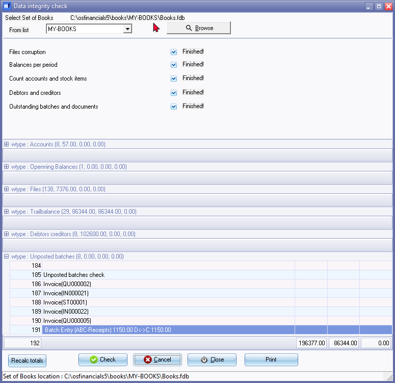

Data integrity check
This option allows you to run a check on the integrity of your data and generate a corresponding report. By selecting this option, you can verify that your data is accurate and free of errors that could cause issues in your Set of Books. Once the check is complete, you can print the "Data integrity check report" to review the results and take any necessary corrective action.
The Data integrity check should be performed on a regular basis. It is recommended that you perform this check at regular intervals and after performing major changes to your Set of Books. It is good practice to perform a Data integrity check on your Set of Books before you make a Backup and after you have restored from a Set of Books.
Performing a Data integrity check on a regular basis is essential for maintaining the accuracy and reliability of your financial records. It is recommended that you perform this check at regular intervals and after making any major changes to your Set of Books.
It is also good practice to perform a Data integrity check on your Set of Books before making a Backup, as well as after restoring from a Set of Books.
By regularly checking your data for integrity issues, you can help ensure that your financial records remain accurate and up-to-date.
|
|
If you are operating in a multi-user environment (i.e. in a networked environment and other users are using the same Set of Books as you are) then ALL users need to exit the Set of Books before the Data integrity check is started. |

Run the data integrity check
To perform a data integrity check:
- On the Setup ribbon, select Tools → Data integrity check.

- Select one of the available options:
- Select a Set of Books by clicking on the From List down arrow (drop-down list) and select an available Set of Books.
|
|
If the Set of Books on which you wish to perform the data integrity check is open on the system, the Data integrity check will be performed for that Set of Books. If no Set of Books is open on the system, the Data integrity check will be performed for the Set of Books that was open before the Data integrity check was initiated, unless another Set of Books is selected. The full path or directory and name of the selected Set of Books on which the Data integrity check is to be performed, if the Check button is clicked on, will be displayed directly under the Data integrity check title bar. |

- Select the type of function, the data integrity check has to perform. It is recommended that in most cases, all of these functions should be selected (with a tick).
- Click on the Check button and the process will be performed. The word Finished will be displayed next to each function when the process for that function is completed. When the whole process is completed, you may click on the Print button to print the Data integrity check report.
- Click on the Close button.
- Study the report to determine if there is any data corruption or errors.
|
|
Check for any errors on the report. If there are any errors, see if you can fix these errors. If these errors cannot be fixed, the Set of Books may have to be restored from your last backup disks. You may have to re-enter some data from the last backup to the last transaction entered before the problem/s arose. |
View data integrity check reports
The Data integrity check report consists of the following five (5) basic sections:
- Files check - List all the tables in the database (Set of Books).
- Accounts check - This specifies the number of Account master files created for each Account type (General ledger, Debtors, Creditors, Bank and Tax accounts) in Setup → Accounts (Setup ribbon). The number of Accounts for Debtors indicates the number of Debtor accounts in the Debtors ledger and the number of Accounts for Creditors indicates the number of Creditor accounts in the Creditors ledger. The total of all account types (ledger, bank, tax, debtor and creditor) in the Set of Books will be displayed.
- Trial balance check - This will list the Accounting Periods and the Debit Totals and Credit Totals and Balances for each period. If there are any balances (i.e. the Debit and Credit Totals for an Accounting period do not balance), it indicates that the data may be corrupt for the specific accounting period in which the Balance is displayed.
- Debtors / Creditor check (Control accounts check) - This will indicate the balances for the Full Amount, Control account and the Outstanding Amount for the Debtors and Creditors. These three amounts must be in balance and must balance with the Debtor's control account or the Creditor's control account in the Balance sheet or Trial balance.
- Unposted batches check - This will only be displayed if there are any documents and batches or journals which have not yet been posted to the ledger. If you have set any users (Setup → Access control on the Setup ribbon), the name of the user will also be displayed.
|
|
If the differences or corruption is not fixed, you may need to Restore the Set of Books from a previous backup. It is advisable not to continue entering transactions until the current Set of Books is repaired. |